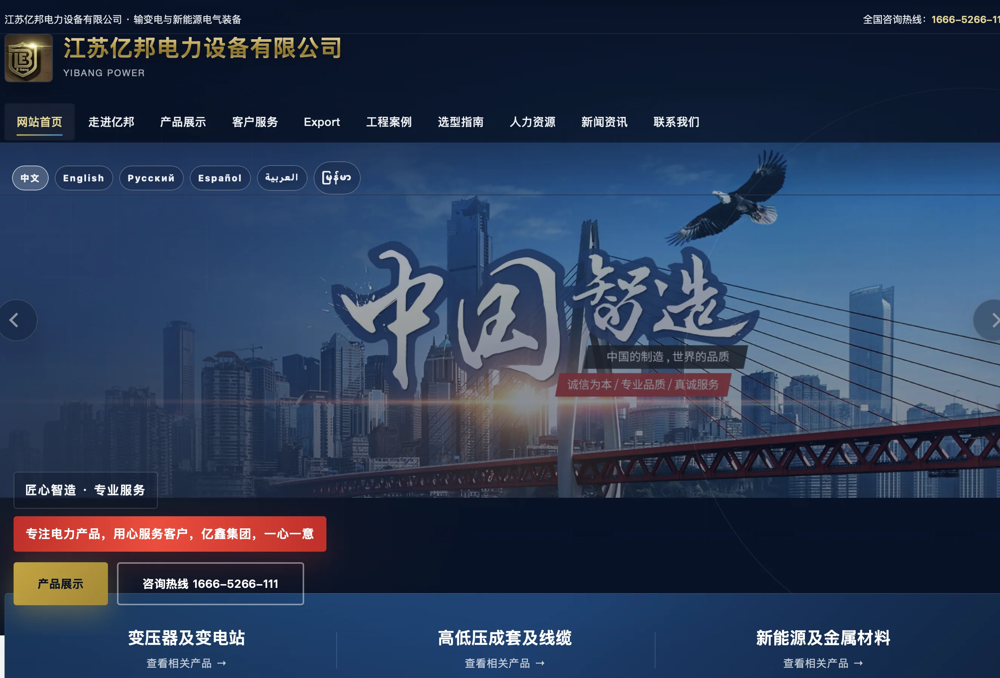
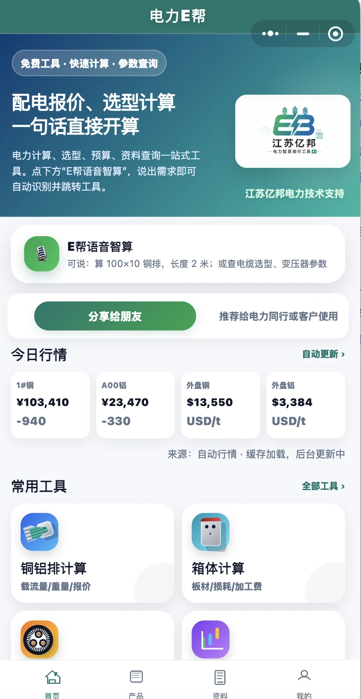
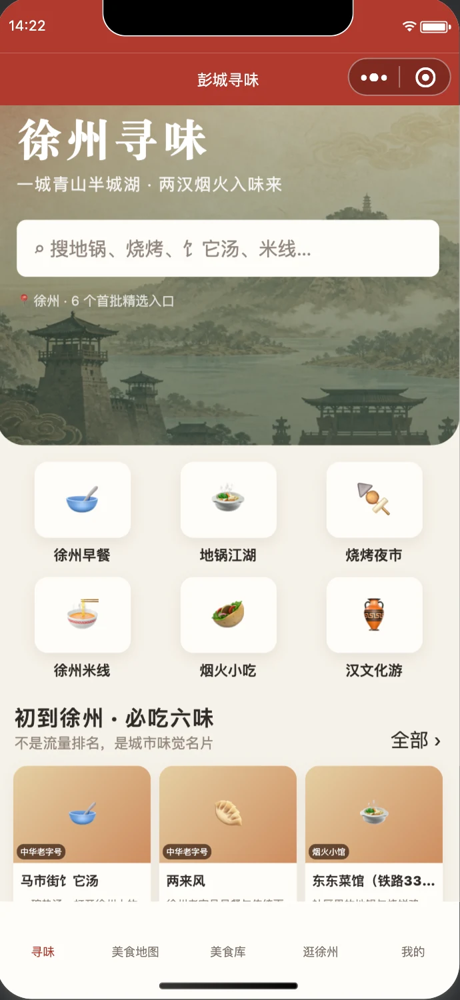

年职业经验
你好，我是
蒋继保。
懂业务，也懂 AI 与增长。
电力行业营销管理者、AI 应用与自动化实践者。具备财会专业基础、销售管理经验与数字产品开发能力，致力于用 AI、网站、小程序和自动化工作流推动企业增长。
JJ
懂经营。更懂落地。 让 AI 真正服务业务与增长。
职业经验18+ 年
核心方向AI × 业务
ABOUT
不追逐概念。
只让技术产生结果。
从会计到销售管理，再到 AI 与数字化实践，我始终站在业务一线解决真实问题。
拥有电力设备行业长期从业经验，曾任销售部经理及企业经理，较早开展电力设备互联网营销。熟悉企业经营、销售管理、客户沟通与数字化推广。
熟练使用国内外 AI 智能体与开发工具，可独立开发网站、小程序、APP，完成视频剪辑与 AI 视频制作，并已搭建 OPC 一人公司智能体、工作流自动化及 1688 工作自动化方案。
年企业管理经历
数字产品开发能力
英语能力
EXPERIENCE
从专业积累，
到数字化创新。
经理
江苏亿邦电力设备有限公司 · 徐州
负责企业经营管理、互联网营销与数字化建设，持续探索 AI 在获客、内容生产、产品展示及工作流程中的实际应用。
- 电力设备互联网营销与企业管理
- 公司官网、小程序及数字产品建设
- AI 智能体、视频与自动化工作流实践
销售部经理
江苏万鑫电力设备有限公司 · 徐州
负责销售团队与市场业务，发挥较早开展电力设备互联网营销的经验，推动传统销售与线上推广相结合。
- 销售管理与客户开发
- 电力设备互联网营销
- 团队协作与业务推进
会计
南京交通工程公司 · 南京
从事企业财务与会计相关工作，建立扎实的财务基础、数据意识与经营分析能力。
- 会计核算与财务管理
- 数据整理与办公软件应用
EDUCATION & CREDENTIALS
专业基础，
持续学习。
中国矿业大学
会计学 · 本科 · 曾任班长
南京交通职业技术学院
涉外会计 · 曾任学生会成员
会计证 · 助理会计师
大学英语四级 · 熟练使用办公与 AI 工具
SELECTED WORK
作品会说话。
围绕企业经营、互联网营销与 AI 应用，持续把想法转化为可使用的数字产品和自动化方案。



AIFLOWRESULT
CAPABILITIES
懂工具，
更懂业务。
企业经营与销售
管理、客户、市场与增长
AI 智能体应用
OpenClaw、Codex、Claude Code、Cursor
数字产品开发
网站、小程序、APP 与自动化工作流
内容与视频生产
视频剪辑、AI 视频与互联网营销
ONE MORE THING
让 AI 落地，
让业务向前。
273223697@qq.com ↗江苏徐州 · 中国
电话：请补充
本科 · 会计学